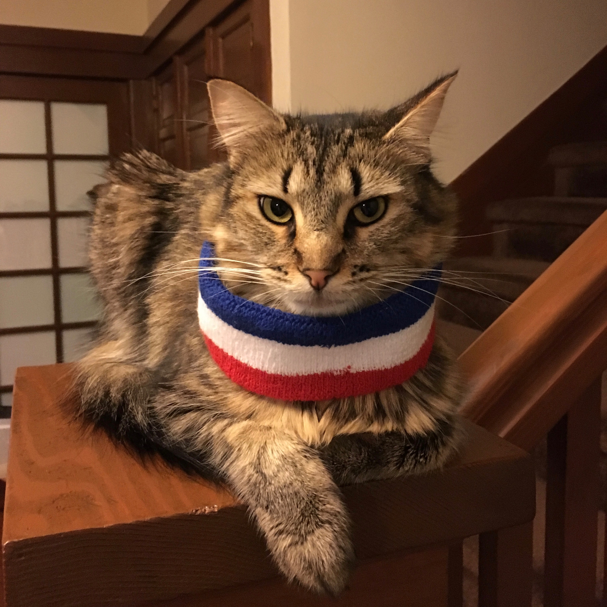

Pet Service Annoucement
Great dogs and friendly cats
BY Kevin Litman-Navarro
Published July 20, 2018
Pets are good. Adopting a pet is very good.
You should adopt a pet. I promise you won't regret it.
You could go to a shelter right now. Maybe you will find your new best friend. But how can you be confident that "the one" is at the particular shelter you visit, at the exact time you are there? That would be quite serendipitous...
and highly unlikely.
Look, I'm just being straight with you, there are many shelters and many pets.
Are you feeling paralyzed now? Are you disheartened? Don't be. What if I told you it was possible to find the perfect pet from the comfort of your home? According to my research, there's a way: Petfinder, the nationwide adoptable pet database. On Petfinder, you can check out all the pets up for adoption in your area.
But Petfinder is more than a resource for connecting pets and people. In fact, we can learn a whole lot about the adoptable pets in our world with a little investigation.
This is Salvador
I adopted Salvador - no regrets
This is Oscar
I adopted Oscar - no regrets

This is Sport
I adopted Sport - he is the worst

Pet detective
To find out more about the world of adoptable pets, I analyzed the profiles of 477 pets (267 dogs and 210 cats) in New York City.
The data contain some ruff rough truths. For example, more than twenty percent of adoptable dogs are pitbulls, likely due to decades of character assassination and scapegoating. Pit bull-phobia can lead to more pit bulls in shelters, and punitive social and financial taxes levied on (predominately black and brown) pit bull owners.
Most common breeds of NYC's adoptable dogs
SOURCE: Petfinder.com
Don't listen to the haters, pit bulls are sweet and smiley and you should go adopt one right now.
Your pet will be a good boy, maybe
Are you adopting a cat or a dog? If it's the latter, I'm inclined to say, yes, of course, your dog will be the best boy. Many people who posted a profile on Petfinder described the dog in their care as nice, or sweet, or good, or friendly.
Fewer cat caregivers were as effusive in their praise. (My sample also included fewer cats, so there is some canine bias here.)
Personality characteristics of cats and dogs, in the words of their caregivers
SOURCE: Petfinder.com
Your pet will get along with your child, hopefully
At least, your pet will probably get along with your child. Unfortunately, pets are animals and sometimes animals are alarmed by kids. Sometimes new pets also don't want to share a home with other pets. On Petfinder, these cantankerous cats and dogs are said, charitably, to “prefer a home without cats/dogs/children.”
If you adopt one of the less-than-ten-percent of pets who don't get along with children, you will have a real Sophie's Choice on your hands.
The proportion of pets who can't live with cats, dogs, or children
SOURCE: Petfinder.com
Jenny MeowCarthy would be proud
One thing you will want to know when picking a soon-to-be best friend is whether or not it might give you rabies. If it is indeed rabies that you fear, you might consider adopting a dog instead of a cat: in New York City, the feline unvaccinated rate is substantially higher than the canine unvaccinated rate.
Unvaccinated rates of adoptable pets in NYC
SOURCE: Petfinder.com
Some animals are more special than others
Make sure you've considered all the pros and cons of adopting a pet. You might invite a cat into your home assuming that it will be generally neat and tidy. After all, cats use litter boxes and clean themselves; dogs tear apart furniture, shit on the ground, and smell like dogs.
Then again, you may ~generously~ invite a cat into your home only to find out that he has a mean case of feline irritable bowel syndrome. Then you can never be sure if the excrement on your bed is a spite shit or an unfortunate accident.
Percentage of special needs pets in NYC’s adoption pool
SOURCE: Petfinder.com